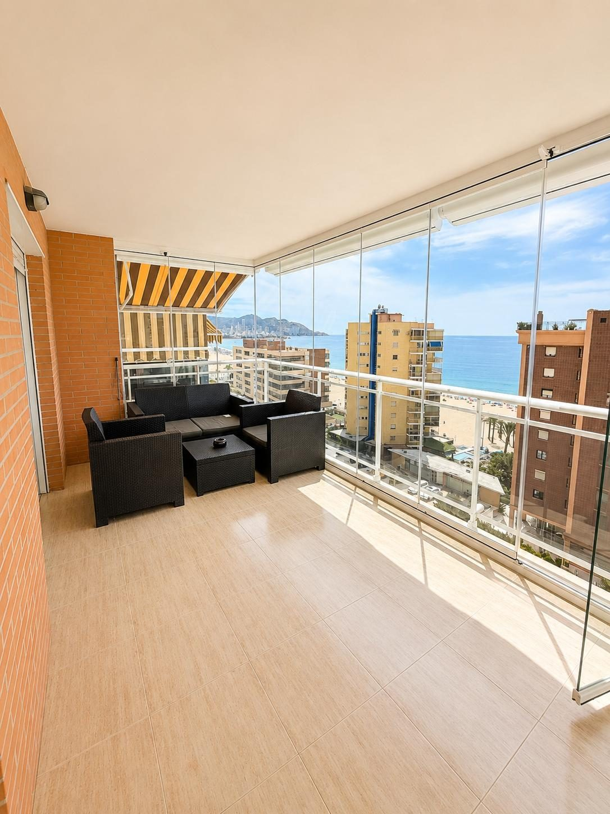
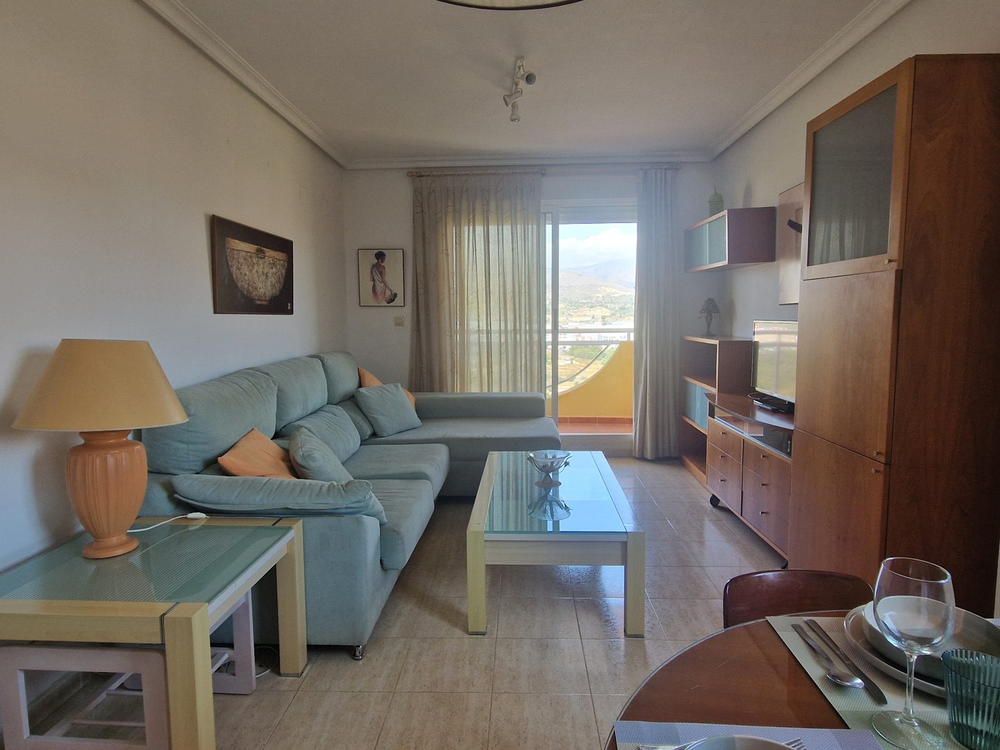
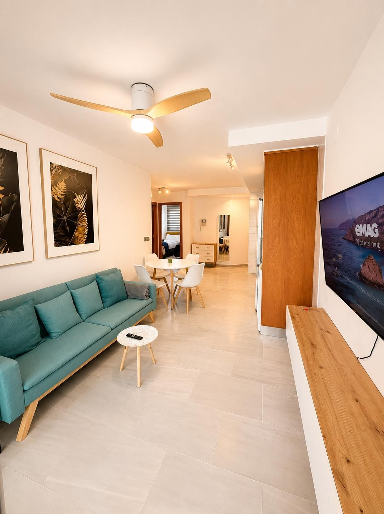
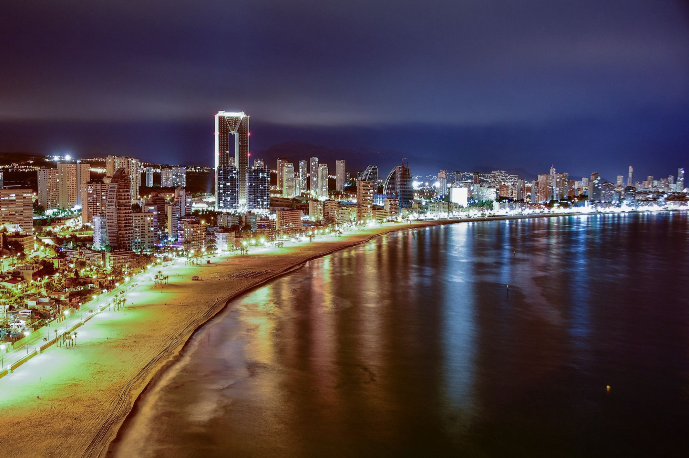
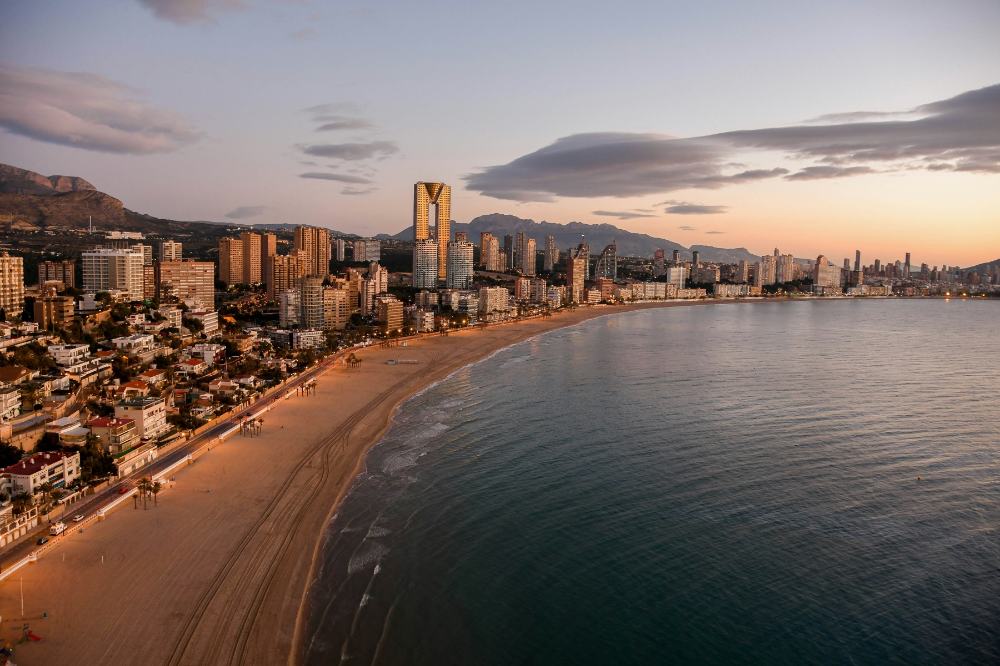

Una colección de apartamentos y villas seleccionados a lo largo de la costa, cuidados por un equipo local para que cada estancia sea sencilla.
No es un portal de anuncios. Es una colección cuidada.
Domia Stays es una agencia boutique en Benidorm. Cuidamos un número deliberadamente reducido de alojamientos, cada uno visitado, decorado y mantenido por nuestro propio equipo, para que al llegar, todo simplemente funcione.
Desde el primer mensaje hasta la salida, tratas con personas reales que viven aquí. Alojamientos honestos, un servicio cálido y una costa que adoramos.

Unos pocos alojamientos, elegidos con mimo
Algunos de nuestros favoritos. Abre cualquiera para ver fotos, detalles y consultar.

Mirador del Levante
Vistas en primera línea sobre la media luna dorada de Levante.

Casa Poniente
Salón orientado al atardecer con terraza envolvente.

Estudio Casco Antiguo
Un estudio romántico a pasos de la plaza y las tapas.

Suite Rincón de Loix
Habitaciones luminosas, piscina resort, a minutos de la arena.

Ático Sierra Cortina
Calma junto al golf con panorámicas del skyline.

Balcón del Mar
Una cala protegida y una terraza para largas cenas.


“Siéntete como en casa, en cualquier lugar”
Benidorm · Costa BlancaSencillo para huéspedes. Sin preocupaciones para propietarios.
Una estancia que se cuida sola
- Llegada sencilla y check-in flexible.
- Limpieza de nivel hotel y ropa de cama fresca.
- Soporte local 24/7 por WhatsApp.
- Extras de conserjería: traslados, compra, experiencias.
Tu apartamento, rentando sin esfuerzo
- Gestión integral, sin preocupaciones.
- Anuncio y fotografía profesional.
- Multi-plataforma y precios dinámicos.
- Filtro de huéspedes e informes transparentes.
Benidorm, más allá de la postal
Dos grandes playas, montañas de fondo, un casco antiguo de calles estrechas y un skyline único en todo el Mediterráneo.

Por qué los huéspedes vuelven
Locales y disponibles
Vivimos aquí. Si surge algo, responde una persona real de Domia, de día o de noche.
Seleccionados y honestos
Cada alojamiento es uno en el que nos quedaríamos. Lo que ves es lo que encuentras.
Sencillo, de principio a fin
Reserva, llegada, estancia y despedida: suavizamos cada paso para que disfrutes.
“El apartamento era aún mejor que las fotos y el check-in no pudo ser más fácil. Como quedarte con amigos que tienen el mejor piso de Benidorm.”
Encontremos tu lugar en la bahía
Cuéntanos tus fechas y quiénes venís. Respondemos personalmente, normalmente en menos de una hora.